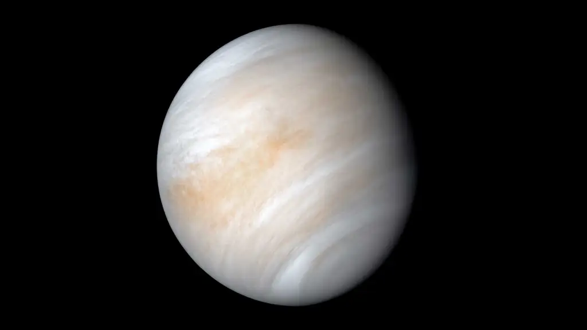

- Mercury
- Venus
- Earth
- Mars
- Jupiter
- Saturn
- Uranus
- Neptune
Mercury, the innermost planet of the solar system and the eighth in size and mass. Its closeness to the Sun and its smallness make it the most elusive of the planets visible to the unaided eye. Because its rising or setting is always within about two hours of the Sun’s, it is never observable when the sky is fully dark. Mercury is designated by the symbol ☿.

Venus, second planet from the Sun and sixth in the solar system in size and mass. No planet approaches closer to Earth than Venus; at its nearest it is the closest large body to Earth other than the Moon. Because Venus’s orbit is nearer the Sun than Earth’s, the planet is always roughly in the same direction in the sky as the Sun and can be seen only in the hours near sunrise or sunset. When it is visible, it is the most brilliant planet in the sky. Venus is designated by the symbol ♀.
Earth, third planet from the Sun and the fifth largest planet in the solar system in terms of size and mass. Its single most outstanding feature is that its near-surface environments are the only places in the universe known to harbour life. It is designated by the symbol ♁. Earth’s name in English, the international language of astronomy, derives from Old English and Germanic words for ground and earth, and it is the only name for a planet of the solar system that does not come from Greco-Roman mythology. Earth is part of the "observable universe," the region of space that humans can actually or theoretically observe with the aid of technology. Unlike the observable universe, the universe is possibly infinite.
Here's the one and only satellite of earth : Moon aka luna
Mars, fourth planet in the solar system in order of distance from the Sun and seventh in size and mass. It is a periodically conspicuous reddish object in the night sky. Mars is designated by the symbol ♂. Sometimes called the Red Planet, Mars has long been associated with warfare and slaughter. It is named for the Roman god of war. As long as 3,000 years ago, Babylonian astronomer-astrologers called the planet Nergal for their god of death and pestilence. The planet’s two moons, Phobos (Greek: “Fear”) and Deimos (“Terror”), were named for two of the sons of Ares and Aphrodite (the counterparts of Mars and Venus, respectively, in Greek mythology).

Jupiter, the most massive planet of the solar system and the fifth in distance from the Sun. It is one of the brightest objects in the night sky; only the Moon, Venus, and sometimes Mars are more brilliant. Jupiter is designated by the symbol ♃.

Saturn, second largest planet of the solar system in mass and size and the sixth nearest planet in distance to the Sun. In the night sky Saturn is easily visible to the unaided eye as a non-twinkling point of light. When viewed through even a small telescope, the planet encircled by its magnificent rings is arguably the most sublime object in the solar system. Saturn is designated by the symbol ♄.

Uranus, seventh planet in distance from the Sun and the least massive of the solar system’s four giant, or Jovian, planets, which also include Jupiter, Saturn, and Neptune. At its brightest, Uranus is just visible to the unaided eye as a blue-green point of light. It is designated by the symbol ♅.

Neptune, third most massive planet of the solar system and the eighth and outermost planet from the Sun. Because of its great distance from Earth, it cannot be seen with the unaided eye. With a small telescope, it appears as a tiny, faint blue-green disk. It is designated by the symbol ♆.